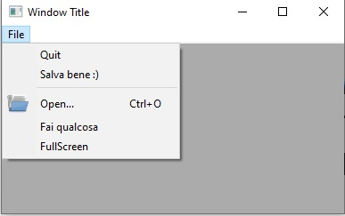
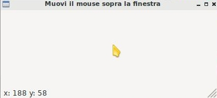
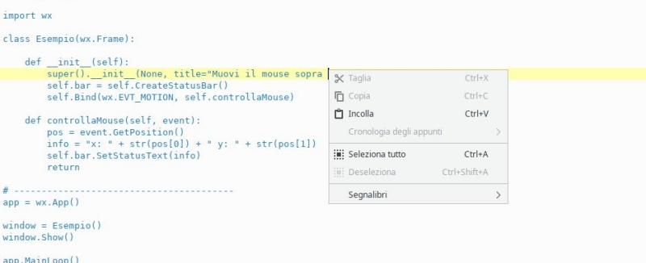

GUI complete
In questo capitolo cercheremo di introdurre tutti quegli elementi grafici che implementano una GUI moderna:
- le azioni
- la barra dei menù
- la barra degli strumenti
- la barra di stato
- il menù contestuale
- le impostazioni delle applicazioni
Skeleton Full GUI
Lo Skeleton è un file che contiene la struttura di base dalla quale partire per costruire qualcosa.
Lo skeleton qui sotto descrive chiaramente una struttura da cui partire per alloggiare in maniera chiara e ben strutturata tutti gli elementi di una app Full GUI, ovvero comprensiva di azioni, menù, barre degli strumenti, etc...
import wx
APP_NAME = "Il nome della vostra App"
class Finestra(wx.Frame):
def __init__(self):
super().__init__(None, title=APP_NAME)
# La MainView
panel = wx.Panel(self)
vbox = wx.BoxSizer(wx.VERTICAL)
self.mainview = wx.StaticText(panel, label = "cambiami con il tuo oggetto principale!!!")
vbox.Add(self.mainview, proportion=1, flag=wx.EXPAND)
panel.SetSizer(vbox)
# Spazio per le variabili membro della classe
# Chiamata alle funzioni che generano la UI
self.creaMenubar()
self.creaToolbar()
# la statusbar è semplice...
self.bar = self.CreateStatusBar()
# le ultime cose, ad esempio, i Bind, le impostazioni iniziali, etc...
self.Bind(wx.EVT_CLOSE, self.funzioneEsci)
# chiamata alla funzione di caricamento impostazioni
self.loadConfig()
return
# in questa funzione andremo a creare e popolare la menubar
def creaMenubar(self):
return
# in questa funzione andremo a creare e popolare la toolbar
def creaToolbar(self):
return
def loadConfig(self):
config = wx.FileConfig(APP_NAME)
# dimensione
w = int(config.Read("width", "800")) # 678 è la larghezza INIZIALE
h = int(config.Read("height", "600")) # 432 è la altezza INIZIALE
self.SetSize(w,h)
# posizione
x = int(config.Read("x", "-1"))
y = int(config.Read("y", "-1"))
if (x,y) == (-1,-1): # se la posizione è (-1,-1) lo metto al centro!
self.Centre()
else:
self.Move(x,y)
return
def saveConfig(self):
config = wx.FileConfig(APP_NAME)
# dimensione
(w,h) = self.GetSize()
config.Write("width", str(w))
config.Write("height", str(h))
# posizione
(x,y) = self.GetPosition()
config.Write("x", str(x))
config.Write("y", str(y))
return
def funzioneEsci(self,evt):
self.saveConfig()
self.Destroy()
return
# ----------------------------------------
if __name__ == "__main__":
app = wx.App()
app.SetAppName(APP_NAME)
window = Finestra()
window.Show()
app.MainLoop()
Ok... abbiamo una struttura di base come ottimo punto di partenza per creare una applicazione con tutti gli oggetti grafici di base!
Vediamo pezzo per pezzo come integrare cose in essa!
Azioni predefinite
In quanti modi diversi si può fare copia e incolla?
Con la combinazione CTRL + C... con l'icona copia sulla barra degli strumenti, con il menù del tasto destro, con la barra in alto... Mi vengono in mente almeno 4 metodi. Probabilmente ne esistono anche altri.
Adesso pensate un momento come foste veri programmatori:
Ma... per ognuna di queste modalità occorre reimplementare un oggetto grafico e una funzione evento???
Fortunatamente la risposta a quest'ultima domanda è no!
In questo contesto rientra un concetto tipico della programmazione grafica: il concetto di azione. E cosa è un'azione?
Una azione è un'astrazione di una funzionalità che il nostro programma vuole offrire all'utente.
Viene identificata univocamente tramite:
- un nome (ad esempio: COPIA)
- una descrizione (ad esempio, COPIA il CONTENUTO NEGLI APPUNTI)
- un'icona (l'icona COPIA)
- una scorciatoia (CTRL + C)
La libreria wxPython per assicurare uniformità nelle azioni più comuni ha pensato bene di identificarle tramite degli ID fissi:
ad esempio l'ID per l'azione SALVA si chiama wx.ID_SAVE.
Ecco l'elenco completo degli ID delle azioni comuni in wxPython:
| Elenco | ACTION ID | Disponibili | ||
|---|---|---|---|---|
| wx.ID_ABOUT | wx.ID_EDIT | wx.ID_JUMP_TO | wx.ID_PRINT | wx.ID_STRIKETHROUGH |
| wx.ID_ADD | wx.ID_EXECUTE | wx.ID_JUSTIFY_CENTER | wx.ID_PROPERTIES | |
| wx.ID_APPLY | wx.ID_EXIT | wx.ID_JUSTIFY_FILL | wx.ID_TOP | |
| wx.ID_JUSTIFY_LEFT | wx.ID_REDO | |||
| wx.ID_BACKWARD | wx.ID_FILE | wx.ID_JUSTIFY_RIGHT | wx.ID_REFRESH | wx.ID_UNDELETE |
| wx.ID_BOLD | wx.ID_FIND | wx.ID_REMOVE | wx.ID_UNDERLINE | |
| wx.ID_BOTTOM | wx.ID_FIRST | wx.ID_LAST | wx.ID_REPLACE | wx.ID_UNDO |
| wx.ID_FLOPPY | wx.ID_REVERT_TO_SAVED | wx.ID_UNINDENT | ||
| wx.ID_CANCEL | wx.ID_FORWARD | wx.ID_NETWORK | wx.ID_UP | |
| wx.ID_CDROM | wx.ID_NEW | wx.ID_SAVE | ||
| wx.ID_CLEAR | wx.ID_HARDDISK | wx.ID_NO | wx.ID_SAVEAS | wx.ID_YES |
| wx.ID_CLOSE | wx.ID_HELP | wx.ID_SELECTALL | ||
| wx.ID_CONVERT | wx.ID_HOME | wx.ID_OK | wx.ID_SELECT_COLOR | wx.ID_ZOOM_100 |
| wx.ID_COPY | wx.ID_OPEN | wx.ID_SELECT_FONT | wx.ID_ZOOM_FIT | |
| wx.ID_CUT | wx.ID_INDENT | wx.ID_SORT_ASCENDING | wx.ID_ZOOM_IN | |
| wx.ID_INDEX | wx.ID_PASTE | wx.ID_SORT_DESCENDING | wx.ID_ZOOM_OUT | |
| wx.ID_DELETE | wx.ID_INFO | wx.ID_PREFERENCES | wx.ID_SPELL_CHECK | |
| wx.ID_DOWN | wx.ID_ITALIC | wx.ID_PREVIEW | wx.ID_STOP |
A breve vedremo anche come utilizzarle in maniera più che semplice!!!
Menubar
Documentazione ufficiale classi MenuBar, Menu, MenuItem
wx.MenuBar: Classe per implementare la barra dei Menù.
wx.Menu: Classe per implementare un Menù.
wx.MenuItem: Classe per implementare un elemento di Menù
I menù sono oggetti grafici che tutti conosciamo e a cui tutti siamo abituati, non c'è bisogno di fare grandi introduzioni!
Per aggiungere una menubar:
- lavoriamo nella funzione
creaMenubardello skeleton. - prima creiamo un oggetto Menubar
- poi creiamo ogni menù che andremo ad aggiungervi (es: File, Modifica, Visualizza, etc...)
- aggiungiamo le azioni necessarie ai nostri menù
- aggiungiamo i menù creati alla menubar
- applichiamo la menubar alla nostra applicazione
Vediamo degli esempi di codice:
# creiamo un oggetto Menubar
mb = wx.MenuBar()
# crea un menù...
fileMenu = wx.Menu()
# POI aggiungi alcune azioni...
fileMenu.Append(wx.ID_NEW)
fileMenu.Append(wx.ID_OPEN)
# altro esempio: inserimento DIRETTO di azione predefinita con TESTO e DESCRIZIONE personalizzati
fileMenu.Append(wx.ID_SAVE, "Salva bene :)", "Salva il documento corrente")
# riga di separazione: serve solo come abbellimento
fileMenu.AppendSeparator()
# creazione di un menuItem da azione predefinita, inserimento icona, aggiunta al menù
closeItem = wx.MenuItem(fileMenu, wx.ID_CLOSE)
closeItem.SetBitmap(wx.ArtProvider.GetBitmap(wx.ART_CLOSE))
fileMenu.Append(closeItem)
# altro menù...
toolsMenu = wx.Menu()
# creazione di una azione personalizzata con ID=35
customItem = wx.MenuItem(toolsMenu, 35, "Fai qualcosa")
toolsMenu.Append(customItem)
# CHECK ITEM
fullScreenItem = wx.MenuItem(toolsMenu, id=100, text="FullScreen", kind=wx.ITEM_CHECK)
toolsMenu.Append(fullScreenItem)
# PENULTIMA COSA: aggiungi i menù alla menubar
mb.Append(fileMenu, '&File') # (La & prima della F di File attiva la scorciatoia ALT + F)
mb.Append(toolsMenu, '&Tools')
# INFINE!!!
self.SetMenuBar(mb)
Se avete sistemato tutto al posto giusto, dovreste ottenere qualcosa di simile a questo:

Per collegare le azioni create ad una funzione (Binding) va intercettato
l'evento wx.EVT_MENU abbinato all'ID della voce di menù in questione:
# per fare Bind dell'azione con ID = wx.ID_EXIT ad una funzione chiamata funzioneEsci
self.Bind(wx.EVT_MENU, self.funzioneEsci, id=wx.ID_EXIT)
# per fare Bind dell'azione con ID = 35 ad una funzione chiamata faiQualcosa
self.Bind(wx.EVT_MENU, self.faiQualcosa, id=35)
Toolbar
Documentazione ufficiale wx.ToolBar
Classe grafica per implementare una barra degli strumenti
Se le barre dei menù dovrebbero permettere l'accesso a tutte le funzioni disponibili in una applicazione, le barre degli strumenti dovrebbero permettere l'accesso alle azioni veloci, ovvero a quelle di maggior utilizzo per gli utenti.
Per aggiungere una Toolbar alla nostra Frame Widget dobbiamo utilizzare
la funzione CreateToolBar a cui poi potremo aggiungere
le azioni che ci interessano.
toolbar = self.CreateToolBar()
# toolbar.AddTool(...e qui si aggiungono le azioni una ad una...)
toolbar.AddTool(wx.ID_OPEN, "Apri", wx.ArtProvider.GetBitmap(wx.ART_FOLDER_OPEN))
toolbar.AddTool(wx.ID_SAVE, "Salva", wx.ArtProvider.GetBitmap(wx.ART_FILE_SAVE))
# un separatore: come abbellimento e per vedere come si fa :)
toolbar.AddSeparator()
toolbar.AddTool(wx.ID_EXIT, "Esci", wx.ArtProvider.GetBitmap(wx.ART_QUIT) )
# riempita la toobar, va eseguito il metodo Realize()
toolbar.Realize()
A questo punto, se volete collegare i pulsanti della Toolbar ad una funzione,
basta eseguire il solito Bind() con l'evento wx.EVT_TOOL.
self.Bind(wx.EVT_TOOL, self.funzioneEsci, id = wx.ID_EXIT )
self.Bind(wx.EVT_TOOL, self.funzioneApri, id = wx.ID_OPEN )
Attenzione!
L'evento wx.EVT_TOOL è automaticamente abbinato ad un evento wx.EVT_MENU e
viceversa. Questo significa che se, ad esempio, avete già implementato
tutte le vostre azioni nella MenuBar e fatto il Binding con i loro ID
con le opportune funzioni, tutte le azioni che aggiungerete alla toolbar
con ID già utilizzati funzioneranno automaticamente senza bisogno di un
ulteriore binding!!!
Vediamo una semplicissima dimostrazione di ciò con una finestra avente una sola azione, presente sia nella menubar che nella toolbar.
# Esempio banale con una sola azione su menu e toolbar, UN UNICO BINDING
import wx
class Esempio(wx.Frame):
def __init__(self):
super().__init__(None, title="Stessa azione: menu & toolbar")
menubar = wx.MenuBar()
fileMenu = wx.Menu()
fileItem = fileMenu.Append(wx.ID_EXIT)
menubar.Append(fileMenu, '&File')
self.SetMenuBar(menubar)
self.Bind(wx.EVT_MENU, self.esci, id=wx.ID_EXIT)
toolbar = self.CreateToolBar()
toolbar.AddTool( wx.ID_EXIT, "ESCI", wx.ArtProvider.GetBitmap(wx.ART_QUIT) )
toolbar.Realize()
def esci(self, event):
self.Close(True)
return
# ----------------------------------------
if __name__ == "__main__":
app = wx.App()
window = Esempio()
window.Show()
app.MainLoop()
wx.StatusBar
Documentazione ufficiale wx.StatusBar
Classe grafica per implementare una barra di stato
La classe wx.StatusBar rappresenta una widget che implementa la barra di
stato delle applicazioni.

E' possibile creare una barra di stato in due modi: o dichiarando un oggetto di tipo wx.StatusBar e poi inserendolo nella finestra tramite il metodo SetStatusBar() oppure chiamando direttamente dalla finestra il metodo CreateStatusBar(). Se dovete solo visualizzare informazioni il secondo metodo è una bomba! Se dovete modificare la StatusBar aggiungendovi widget e icone serve il primo metodo, eventualmente creando una classe derivata da wx.StatusBar.
Nell'esempio proposto si crea automaticamente una StatusBar e si visualizza la posizione del puntatore non appena questo entra nella finestra.
import wx
class Esempio(wx.Frame):
def __init__(self):
super().__init__(None, title="Muovi il mouse sopra la finestra")
self.bar = self.CreateStatusBar()
self.Bind(wx.EVT_MOTION, self.controllaMouse)
def controllaMouse(self, event):
pos = event.GetPosition()
info = "x: " + str(pos[0]) + " y: " + str(pos[1])
self.bar.SetStatusText(info)
return
# ----------------------------------------
app = wx.App()
window = Esempio()
window.Show()
app.MainLoop()
Context Menu
I Context Menus ovvero i menù contestuali sono quei menù che appaiono quando si fa click con il tasto destro in determinate posizione della nostra applicazione. Risulta chiaro a mio avviso che i Context Menu dipendono dalla widget sopra la quale si fa click con il tasto destro. Un immagine vale più di 1000 parole:

Per capire come si può implementare un Context Menu tramite la libreria wxPython proviamo ad implementarne uno su una widget con dentro un check item che abilita o disabilita la toolbar, rendendo possibile in quest'ultimo caso utilizzare i suoi strumenti.
import wx
class Esempio(wx.Frame):
def __init__(self):
super().__init__(None, title="Context Menu")
self.toolbar = self.CreateToolBar()
exitTool = self.toolbar.AddTool( wx.ID_EXIT, "ESCI", wx.ArtProvider.GetBitmap(wx.ART_QUIT) )
self.toolbar.Realize()
self.Bind(wx.EVT_TOOL, self.esci, exitTool)
# serve ad attivare il Context Menu
self.Bind(wx.EVT_RIGHT_DOWN, self.OnRightDown)
# Crea il menù, pronto per essere attivato!
self.contextMenu = wx.Menu()
self.fsItem = wx.MenuItem(self.contextMenu, id=100, text="Toolbar abilitata", kind=wx.ITEM_CHECK)
self.contextMenu.Append(self.fsItem)
self.contextMenu.Check(100, True)
self.Bind(wx.EVT_MENU, self.ManageToolBar, self.fsItem)
def esci(self, event):
self.Close(True)
return
def OnRightDown(self, event):
self.PopupMenu(self.contextMenu, event.GetPosition())
def ManageToolBar(self,event):
if self.fsItem.IsChecked():
self.toolbar.Enable(True)
else:
self.toolbar.Enable(False)
# ----------------------------------------
app = wx.App()
window = Esempio()
window.Show()
app.MainLoop()
Il risultato di questo codice è il seguente:

Spero che osservare e riprodurre l'esempio sia sufficiente per capire il funzionamento :)
Impostazioni
Documentazione ufficiale wx.FileConfig
Classe per la gestione delle configurazioni utente di una applicazione
Può essere interessante e/o addirittura necessario per una applicazione salvare da qualche parte alcune impostazioni da ricaricare al prossimo riavvio. Ad esempio potrebbe essere interessante tracciare la posizione e la dimensione della finestra principale nello schermo, per riproporla identica... oppure nel caso di una applicazione che permette ad esempio di cambiare la dimensione del font, di memorizzare questa impostazione e riproporla anche nelle successive esecuzioni, senza dover ogni volta costringere l'utente a cambiarla di nuovo.
Certo siete già in grado di fare questo tipo di lavoro salvando ad esempio su file di testo queste informazioni... ma dove lo mettiamo questo file per essere ragionevolmente sicuri di ritrovarlo alla prossima esecuzione? A tutte queste domande risponde con semplicità disarmante la classe wx.FileConfig che deriva dalla classe astratta wx.ConfigBase (uhm... forse non sapete cosa significa astratta... pazienza!!!).
La classe wx.FileConfig richiede come informazioni solo il nome dell'applicazione, poi per ogni sistema operativo sceglie il posto riservato alle impostazioni delle applicazioni e scrive lì dentro un file di testo con una sequenza di coppie VARIABILE = VALORE.
Quindi riassumendo:
- STEP 1
-
Dare un nome alla propria App. Questo si fa nella classe App, prima di creare una finestra, con la funzione SetAppName. Ad esempio:
- STEP 2
-
Dove ti serve di salvare alcune impostazioni, crea un oggetto della classe wx.FileConfig e salva i tuoi dati con la funzione
Write("variabile", valore). Nell'esempio sotto proviamo a salvare la variabile "colore" che contiene il valore "red" e la variabile "dimensioneFont" che contiene il valore 18. Attenzione ad assicurarsi di salvare sempre e solo stringhe: - STEP 3
-
Quando ti serve di sapere i valori abbinati alle variabili "colore" e "dimensioneFont", che evidentemente per il tuo programma sono importanti, ti basterà andare a controllarne il valore con le funzioni Read (che restituisce sempre stringhe, quindi converti i valori se ne hai bisogno).
Come vedete salvare le configurazioni della propria App diventa semplicissimo, a patto di saper scegliere bene i valori da salvare come impostazioni e di fare in modo che i dati da salvare siano semplicemente convertibili in stringhe.